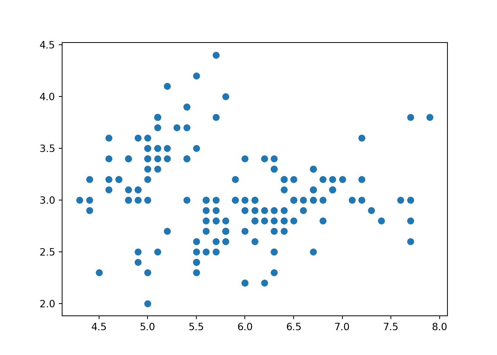
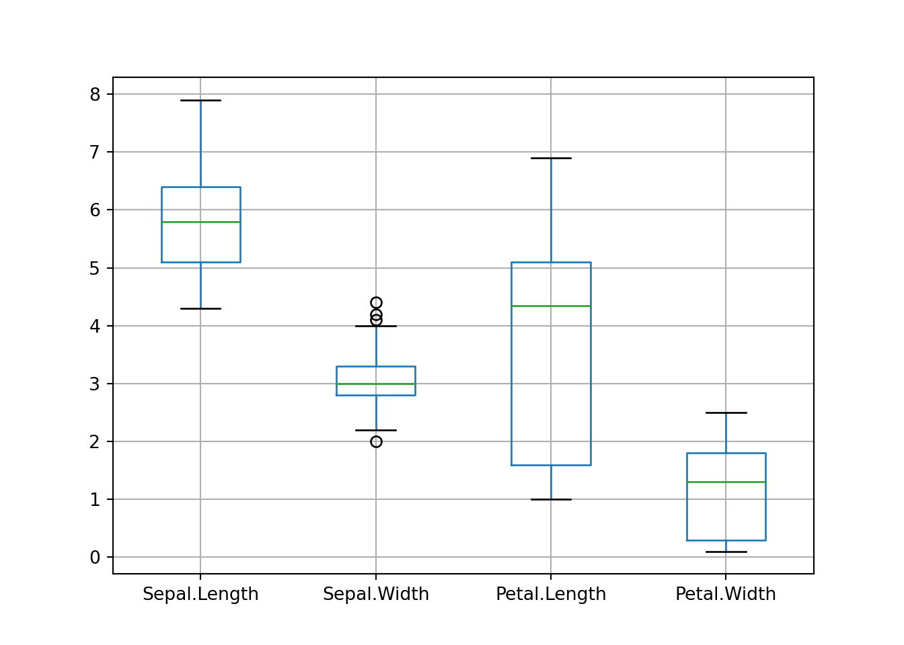
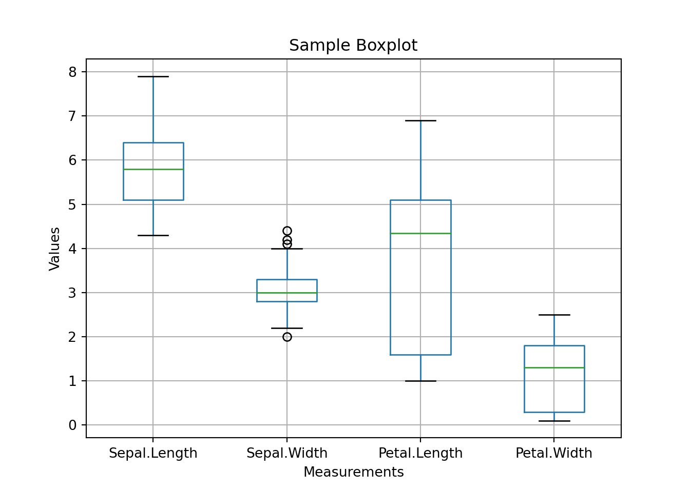

matplotlib is a standard package used in Python for plotting. This is a basic plotting package, but does have limitations.
If you are familiar with R, you may have used ggplot2 before. In Python, the equivalent package would be Altair. We will take a look at some basic Altair plotting tools.
Let’s switch things up now and use a different data set to visualize. Like R, Python has a few built-in data sets. A popular R dataset, iris, can also be found in Python. Let’s load the iris data set here.
import statsmodels.api as sm
iris = sm.datasets.get_rdataset('iris').data
iris## Sepal.Length Sepal.Width Petal.Length Petal.Width Species
## 0 5.1 3.5 1.4 0.2 setosa
## 1 4.9 3.0 1.4 0.2 setosa
## 2 4.7 3.2 1.3 0.2 setosa
## 3 4.6 3.1 1.5 0.2 setosa
## 4 5.0 3.6 1.4 0.2 setosa
## .. ... ... ... ... ...
## 145 6.7 3.0 5.2 2.3 virginica
## 146 6.3 2.5 5.0 1.9 virginica
## 147 6.5 3.0 5.2 2.0 virginica
## 148 6.2 3.4 5.4 2.3 virginica
## 149 5.9 3.0 5.1 1.8 virginica
##
## [150 rows x 5 columns]Let’s first start by looking at matplotlib.
We will take a look at a scatterplot of the first two columns in iris.
import matplotlib.pyplot as plt
plt.scatter(x = iris['Sepal.Length'], y = iris['Sepal.Width'])
How about a boxplot?
new_data = iris[["Sepal.Length", "Sepal.Width", "Petal.Length", "Petal.Width"]]
new_data.boxplot()
If we wanted to add a title and axis labels to the plot:
new_data.boxplot()
plt.title("Sample Boxplot")
plt.xlabel("Measurements")
plt.ylabel("Values")
Try using the functions plt.hist() and
plt.bar() to generate some other plots!
Now, let’s take a look at a few of Altair’s functions.
In order to use Altair, we have to change the column names because it
does not support the functionality with Column.Name.
# rename columns
iris = iris.rename(columns={'Sepal.Length': 'SepalLength',
'Sepal.Width': 'SepalWidth',
'Petal.Length': 'PetalLength',
'Petal.Width': 'PetalWidth'})
iris## SepalLength SepalWidth PetalLength PetalWidth Species
## 0 5.1 3.5 1.4 0.2 setosa
## 1 4.9 3.0 1.4 0.2 setosa
## 2 4.7 3.2 1.3 0.2 setosa
## 3 4.6 3.1 1.5 0.2 setosa
## 4 5.0 3.6 1.4 0.2 setosa
## .. ... ... ... ... ...
## 145 6.7 3.0 5.2 2.3 virginica
## 146 6.3 2.5 5.0 1.9 virginica
## 147 6.5 3.0 5.2 2.0 virginica
## 148 6.2 3.4 5.4 2.3 virginica
## 149 5.9 3.0 5.1 1.8 virginica
##
## [150 rows x 5 columns]Let’s check the data types.
iris.dtypes## SepalLength float64
## SepalWidth float64
## PetalLength float64
## PetalWidth float64
## Species object
## dtype: objectNow that we’re ready, let’s view a scatter plot of the first two columns in iris.
import altair as alt
alt.Chart(iris).mark_point().encode(
x = 'SepalLength',
y = 'SepalWidth'
)If we wanted to view this same scatterplot but also distinguish by colour, we could add in one small line at the end. Also, let’s add some axis titles and change the scale to reduce the white space.
alt.Chart(iris, title="Comparing Sepal Length to Sepal Width").mark_point().encode(
x = alt.X('SepalLength', title = 'Sepal Length', scale = alt.Scale(domain = (4,9))),
y = alt.Y('SepalWidth', title = 'Sepal Width', scale = alt.Scale(domain = (1.5,4.5))),
color = 'Species'
)Unfortunately, Altair only accepts the US spelling of colour!
We see that the red and orange are a bit hard to distinguish. We can add in different shapes to help distinguish between species.
alt.Chart(iris, title="Comparing Sepal Length to Sepal Width").mark_point().encode(
x = alt.X('SepalLength', title = 'Sepal Length', scale = alt.Scale(domain = (4,9))),
y = alt.Y('SepalWidth', title = 'Sepal Width', scale = alt.Scale(domain = (1.5,4.5))),
color = 'Species',
shape = 'Species'
)There is a feature in Altair called a tooltip that
allows users to interact with the plot.
Let’s add a tooltip to the scatterplot above to see how it looks.
alt.Chart(iris, title="Comparing Sepal Length to Sepal Width").mark_point().encode(
x = alt.X('SepalLength', title = 'Sepal Length', scale = alt.Scale(domain = (4,9))),
y = alt.Y('SepalWidth', title = 'Sepal Width', scale = alt.Scale(domain = (1.5,4.5))),
color = 'Species',
shape = 'Species',
tooltip = ('Species'))We can add as many different columns to the tooltip as we want.
alt.Chart(iris, title="Comparing Sepal Length to Sepal Width").mark_point().encode(
x = alt.X('SepalLength', title = 'Sepal Length', scale = alt.Scale(domain = (4,9))),
y = alt.Y('SepalWidth', title = 'Sepal Width', scale = alt.Scale(domain = (1.5,4.5))),
color = 'Species',
shape = 'Species',
tooltip = (['Species','SepalLength','SepalWidth','PetalLength','PetalWidth'])
)Another feature we can add is the ability to make the graph interactive. This would allow the user to scroll or zoom.
alt.Chart(iris, title="Comparing Sepal Length to Sepal Width").mark_point().encode(
x = alt.X('SepalLength', title = 'Sepal Length', scale = alt.Scale(domain = (4,9))),
y = alt.Y('SepalWidth', title = 'Sepal Width', scale = alt.Scale(domain = (1.5,4.5))),
color = 'Species',
shape = 'Species',
tooltip = (['Species','SepalLength','SepalWidth','PetalLength','PetalWidth'])
).interactive()Notice also there is something called mark_circle()
which is different than mark_point().
We can show the same graph as above, but with
mark_circle() instead of mark_point().
alt.Chart(iris, title="Comparing Sepal Length to Sepal Width").mark_circle().encode(
x = alt.X('SepalLength', title = 'Sepal Length', scale = alt.Scale(domain = (4,9))),
y = alt.Y('SepalWidth', title = 'Sepal Width', scale = alt.Scale(domain = (1.5,4.5))),
color = 'Species',
shape = 'Species',
tooltip = (['Species','SepalLength','SepalWidth','PetalLength','PetalWidth'])
).interactive()Let’s take a look at mark_line(), and let’s remove the
shape argument.
alt.Chart(iris, title="Comparing Sepal Length to Sepal Width").mark_line().encode(
x = alt.X('SepalLength', title = 'Sepal Length', scale = alt.Scale(domain = (4,9))),
y = alt.Y('SepalWidth', title = 'Sepal Width', scale = alt.Scale(domain = (1.5,4.5))),
color = 'Species',
tooltip = (['Species','SepalLength','SepalWidth','PetalLength','PetalWidth'])
).interactive()We can overlay plots on top of each other. Let’s plot the scatterplot and lines together.
line = alt.Chart(iris, title="Comparing Sepal Length to Sepal Width").mark_line().encode(
x = alt.X('SepalLength', title = 'Sepal Length', scale = alt.Scale(domain = (4,9))),
y = alt.Y('SepalWidth', title = 'Sepal Width', scale = alt.Scale(domain = (1.5,4.5))),
color = 'Species',
tooltip = (['Species','SepalLength','SepalWidth','PetalLength','PetalWidth'])
).interactive()
point = alt.Chart(iris).mark_point().encode(
x = 'SepalLength',
y = 'SepalWidth',
color = 'Species')
line + pointWe can also show multiple plots at once using the arguments we learned in part 3.
Recall:
|&Try looking at them horizontally by typing
line | point
Then, try looking at thee stacked vertically by typing
line & point
We can also combine these features to design whatever layout you would like. First, let’s introduce a boxplot.
If we wanted to show a boxplot for the different petal lengths, we could do so like this:
alt.Chart(iris, title = 'Petal Lengths of Species').mark_boxplot().encode(
x = alt.X('Species', title = 'Type of Species'),
y = alt.Y('PetalLength', title = 'Petal Length')
)To make it look nicer, we could add colour to each species, and then store it as a variable.
box = alt.Chart(iris, title = 'Petal Lengths of Species').mark_boxplot().encode(
x = alt.X('Species', title = 'Type of Species'),
y = alt.Y('PetalLength', title = 'Petal Length'),
color = 'Species'
)
boxNow, let’s show all three plots together.
You can show more than two plots together as well. Try writing
line | point | box.
You can also mix and match operators. Using brackets will help to
organize the layout. Try writing
line | (point & box).
Many different Altair charts can be created using
mark_bar(), mark_line(),
mark_point(), mark_rect(), and so many
more!
A complete list can be found here!